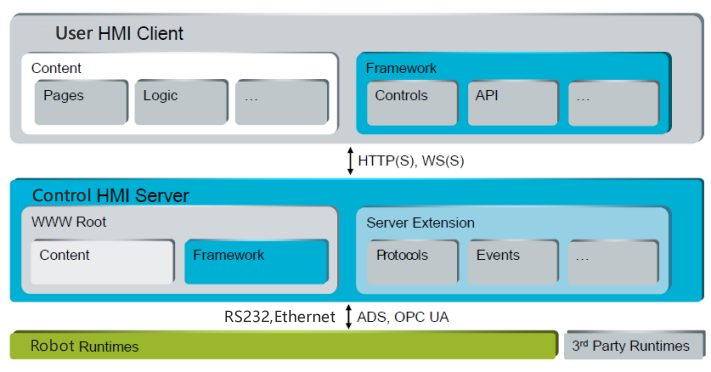

Home
因为涉及部分公司资料，故此处仅简单写点介绍。
基于六维力矩传感器的主动式打磨机器人控制系统
本软件 的特色是跨平台（Windows/Linux/MacOS/Android），支持各种设备（电脑/平板/手机/嵌入式），只要有Web浏览器就可以连接并控制机器人运动，可以使用任何网页编程语言（HTML5/PHP/Python/XML/JavaScript/ASP..），自适应设备显示。解决了传统机器人示教控制存在以下几个问题：1.传统机器人示教器价格昂贵；2.各厂家的示教器不通用；3.需要学习厂家特定的编程语言；
本软件采用模块化设计，各模块功能明确、入口参数完整、编写规范；各模块之间逻辑关系清晰，返回参数严谨。

系统需求
本软件适用系统：Windows/Linux/MacOS/Android。
安装和运行方法
安装方法：本软件无需安装。
运行方法：只需打开浏览器(最新版本的IE11/Chrome/Firefox)，输入机器人控制器IP地址。
软件功能
本软件的功能包括：
1、用户权限管理；
2、机器人点动控制，实时显示关节及末端位置；
3、在线机器人运动图形化命令编程；
4、力控设定及点位列表运动；
5、从文件导入离线编写好的运行轨迹；
使用方法
本软件是通过Web浏览器操作界面，打开浏览器(本处以Firefox为例说明)，在地址栏入：
http://192.168.0.201/Tc3PlcHmiWeb/Port_851/Visu/webvisu.htm。
以下就几个主要界面操作进行简单说明。
首先载入的是用户登录界面，此界面分为三个部分，1)标题栏，显示登录用户信息及全局按钮。2)界面切换，点击此处各按键，可以在不同功能界面切换。3)登录输入窗口，在此输入用户名和密。如图所示：

登录后根据不同用户权限显示相应的操作界面(以Admin最高权限为例说明)，点击2处的“运行”按键，可以进入机器人初始倾，此界面主要分为五部分，1)机器人模拟运动画面及程序操作区；2)程序运行实时Log区；3)初始化操作区；4)加载程序区；5程序详细命令区。在检查硬件一切正常后，点击3处的“初始化”按钮，等待机器人初始化完成。然后可以点击4处的“打开”按钮，加载已经编写好的程序。之后点击1处的“ ”按钮，就可以开始执行自动程序了。如图所示：

点击本软件底部的“手动”－“点动”按钮，此界面共分为六部分:1)各种手动功能区;2)机器人模拟运动画面；3)末端点动按钮区；4)基本参数设置区；5)末端坐标显示区；6)关节点动及坐标显示区。 比如首先通过4处设定好运动参数，然后通过3处对机器人末端进行位置控制或者通过6处对机器人进行关节运动控制。如图所示：
点击本软件底部的“手动”－“直线”按钮，此界面共分为四部分:1)命令操作区;2)关节速度设定区；3)目标位置设定及采样区；5)运行路径点列表区。在此界面可以进行关节运动的操作。比如，先在2处设定好速度，然后在3处输入目标位置点，各目标点会显示在4处的列表区。然后点击1处的执行，机器人就会按照4处的列表点依次运行。

点击本软件底部的“手动”－“直线”按钮，此界面共分为五部分:1)命令操作区;2)速度设定区；3)力控参数设定区；4)运行位置设定及采样区；5)运行路径点列表区。在此界面可以进行力矩打磨操作。首先调整“线速度”<0.05m/s,“角速度”<20°/S。然后点击“采样”按钮，获取当前位置，将[力控]部分的”Z”的值设定为20N，其他保持不变。勾选复选框”启用力控”/”Z”/”Rx”/”Ry”/”Rz”，再点击“添加”按钮，将该位置添加到 [路点] 列表。将[位置设置]中的”Y” 或者 “X”修改为目标点值，再点击[力控]中的“设置”按钮，启动力矩模式。选择[路点]列表中的和当前点相同的一行，点击[运动控制]中的“执行选定”按钮，此时机器人会在当前点向下运动，接触工件后机器人会停止，然后选择[路点]列表中的目标点一行，点击[运动控制]中的“执行选定”按钮，此时机器人会开始按照力矩模式运动到目标点，并停止在目标点与工件接触的位置。

点击本软件底部的“手动”－“拖动”按钮，在此界面可以进行机器人拖动示教操作，比如首先勾选1区的X/Y/Z三个复选框，然后点击按钮”启动”就可以开始“拖动”示教功能，用手抓住机器人末端，此时可以控制机器人随手而动。

点击本软件底部的“设置”－“安全配置”按钮，此界面共分为四部分:1)关节角限制区;2)关节速度限制区；3)末端参数设定区；4)安全运行区域设定区。在此界面可以进行机器人安全参数设定操作。各参数可以参考机器人规格书及实际安装工况进行设定。

点击本软件底部的“设置”－“ 传感器”按钮，此界面共分为四部分:1)力传感器零位设定区;2)力传感器安装位置设定区；3)力传感器限制参数设定区；4)力传感器方向设定区。此界面中可以根据实际打磨头修改2处的传感器安装位置X/Y/Z三个参数，根据打磨力可以修改3处的限制参数。

点击本软件底部的“编程”按钮，此界面共分为四部分:1)当前编写或加载的程序详细命令区;2)程序文件操作区；3)编程命令选择区；4)当前程序命令编辑区。在此界面，可以对机器人预先编写好程序，然后按照程序中的设定进行打磨运动。